功能说明：针对版式可展示不同的功能配置
注：不同的版式展示的功能不同，如当前页面未显示对应功能则表示当前版式不支持
点击右上角【修改】进入编辑状态，编辑状态下展示完整的可选配置
一、版式个性化(单选)
WS浏览器下载入口配置：默认隐藏，开启可选择对应入口展示，客户端点击展示WS引导弹窗
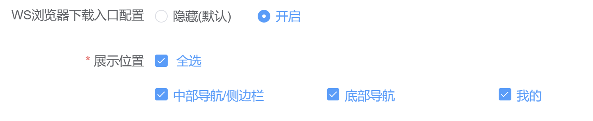
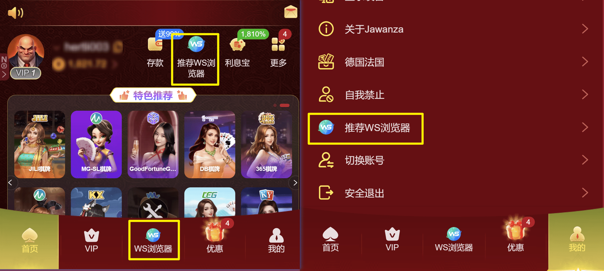
新用户语言币种选择弹窗：默认关闭，开启后首次进入客户端将展示语言币种选择弹窗，弹窗可以点击切换语言币种也可直接关闭
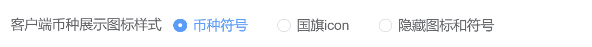
客户端币种展示图标样式：默认币种符号，客户端全局都会展示币种符号（部分模块特殊除外）
选择国旗icon，客户端全局都会展示国旗icon
选择隐藏图标和符号，客户端全局都不会展示国旗或者币种
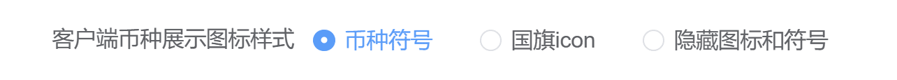
Banner样式：可选择5种banner 样式，注意：部分定制版无法切换banner 样式，详情请咨询对应的定制群
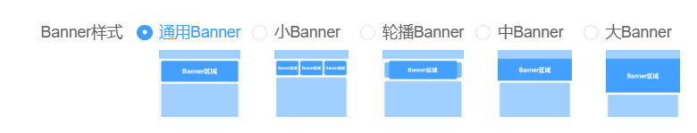
侧边导航栏样式：适用首页有侧边导航栏的通用版式，部分版式不支持配置的则会隐藏该配置项，注意：样式1的图标是公用图标，但侧边导航栏的颜色会跟随版式的皮肤颜色适配，选择皮肤默认则是保持版式自带的默认样式 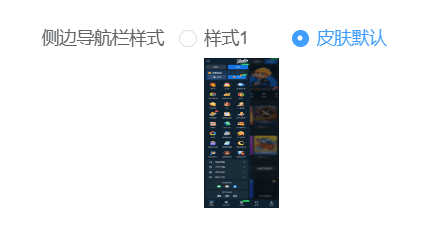
页面滑动灵敏度：仅公版皮肤APP适用，默认适中，如页面滑动响应慢可调整为较快
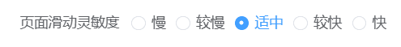
首页排版（仅综合版1展示）
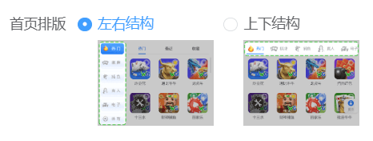
侧边菜单栏（仅综合版1展示）注：二级页面也同步生效
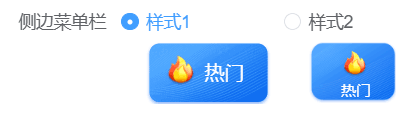
我的页面样式7个样式，部分版式不支持配置的则默认隐藏
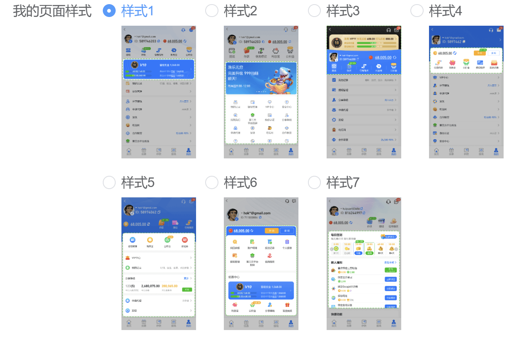
未绑定NO钱包是否展示引导用户绑定：仅CNY、VND、BRL、INR、PKR币种下展示，在财务管理大类配置和三方代付中需要将NO钱包通道置顶
注：客户端的首页、我的页面展示相关入口，不适配得默认隐藏
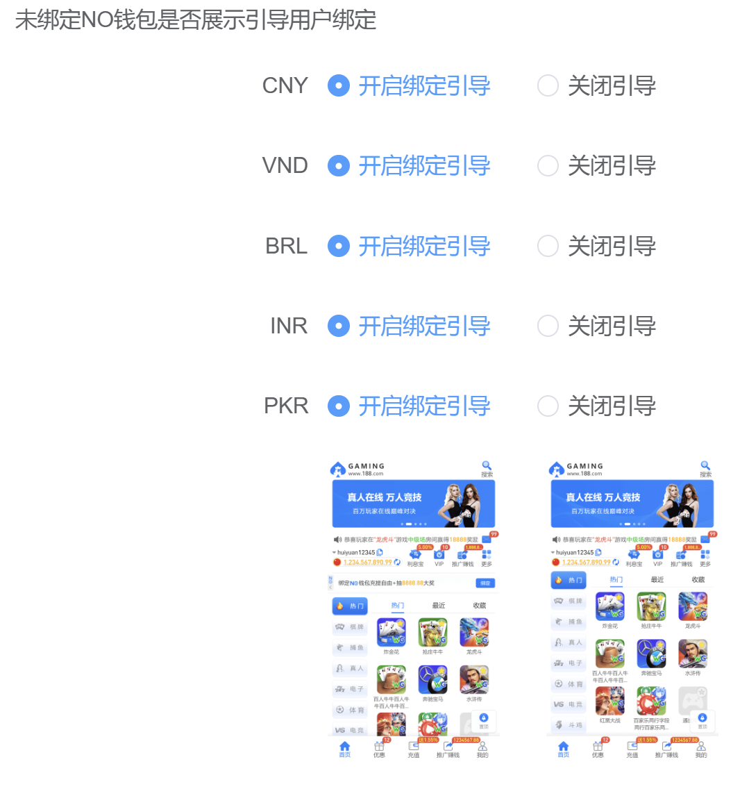
是否开启自营体育：只有综合版相关版式可以选择WG体育版式，部分版式不支持配置的则默认隐藏，开启后，首页将展示WG体育排版，赛事内容和原WG体育一致。点击游戏管理，跳转至游戏管理页面选择对应币种开启
注意：因为体育类型和币种相关，当前是对应币种开启后，大厅才能正常展示体育排版
若此配置项开启，首页WG体育赛事推荐勾选展示，首页会优先展示自营体育，体育赛事推荐则无法展示
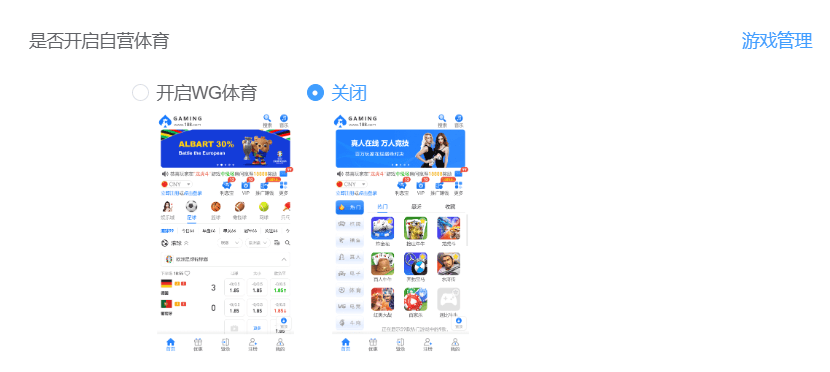
游戏卡片样式：平台卡片和游戏卡片都新增多样式，可支持分别配置
注：部分版式不支持配置的则默认隐藏，因数据库处理资源下发展示都需要时间，请不要频繁改动，避免客户端展示异常
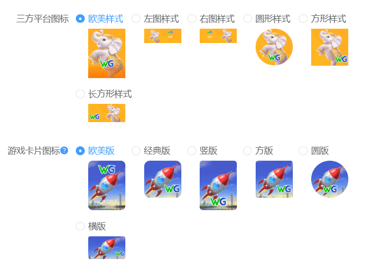
游戏角标：推荐/新/火爆分别选择，选择后在【游戏管理】【子游戏管理】中修改角标，部分版式不支持配置的则默认隐藏
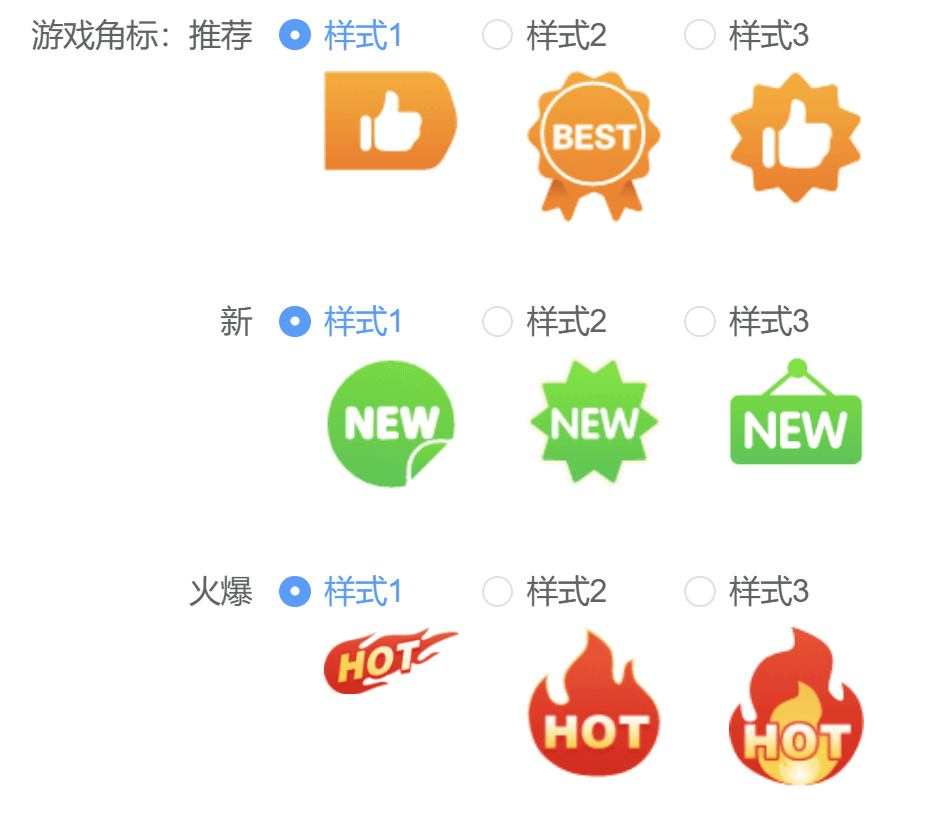
弹窗样式：对应消息管理展示在客户端的弹窗样式
备注:已恢复原本样式，新增的样式为6、7
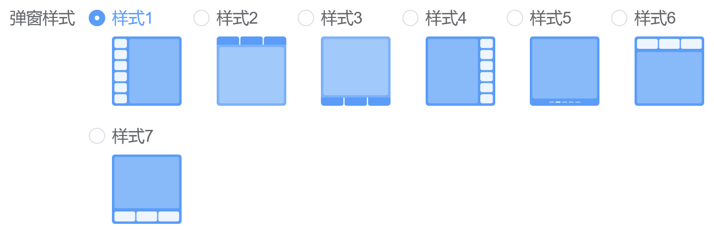
翻页样式
注：部分版式不支持配置的则默认隐藏，如首页展示手动加载，那游戏二级页面也同样展示手动加载
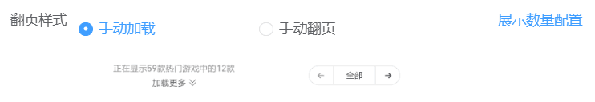
lobby按钮样式：用于内嵌游戏返回大厅的icon，仅支持RN包展示
注：充值功能旧版APP不支持配置，默认使用样式1，主播号内充值只展示在线充值和转账充值
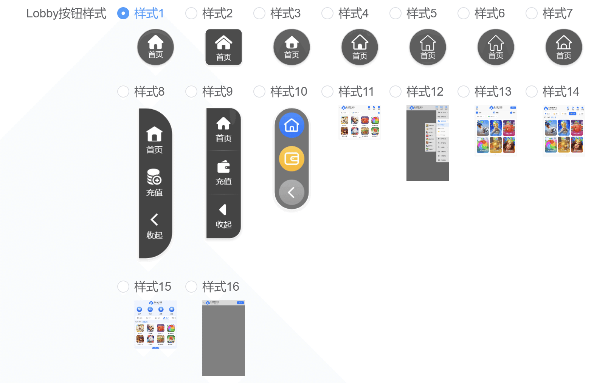
二级页面展示底部导航条：开启后在折扣券、朋友圈、自我禁止、赛事资讯、关于我们、游戏二级页面展示底部导航，默认关闭，部分版式不支持配置的则默认隐藏
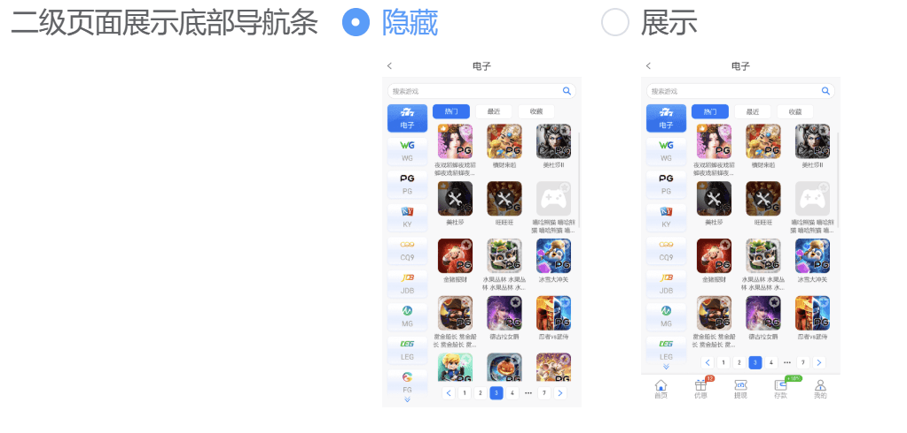
游戏二级页面类型切换：开启后游戏二级页面将展示对应样式切换，无需再回到首页进行类型切换，默认样式1，部分版式不支持配置的则默认隐藏
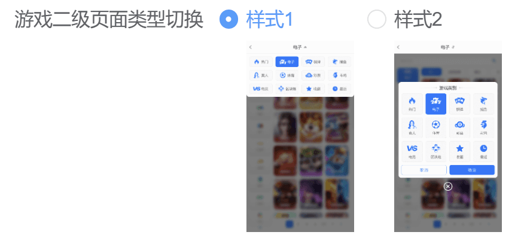
俱乐部版式客户端会员充值/提现入口：只在俱乐部1、俱乐部2展示
可选择全部会员、对应层级、对应标签展示，隐藏后客户端将不展示对应的入口
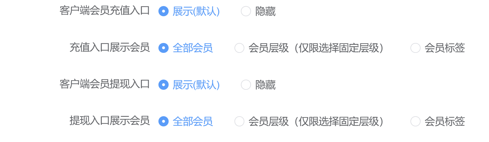
游戏维护样式
注：部分版式不支持配置的则默认隐藏，使用对应皮肤数据
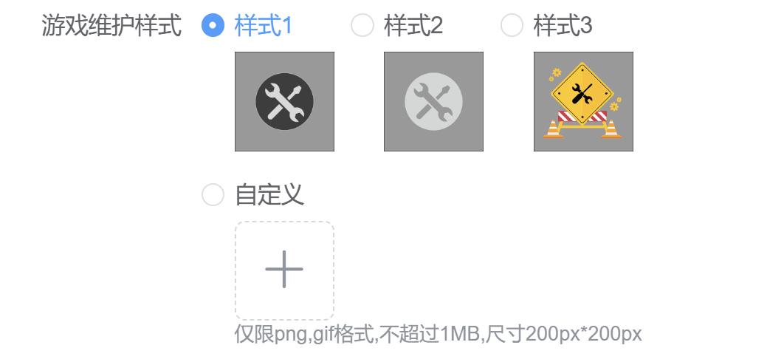
客户端领取小红点提醒：默认展示，隐藏后客户的活动模块不展示小红点，支持单个勾选
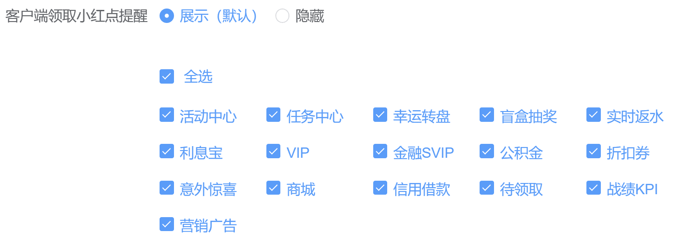
首页热门游戏卡片：U版2、真人版2、俱乐部版1和相关定制版式下会展示此配置
选择隐藏：热门在更多页面，为类型图展示，选择展示：热门为具体的游戏图，展示在首页，后台配置多少就展示多少，可左右滑动切换
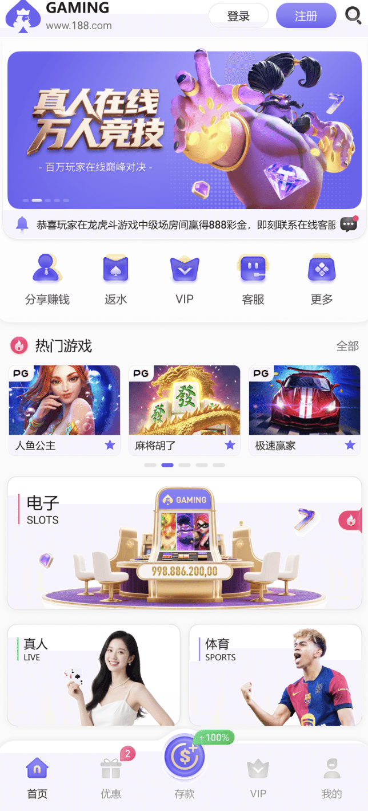
操作方式：点击右上角【修改】进入修改页面，选择对应得配置后，点击【生成预览】可查看相关预览效果(预览不代表实际大厅展示效果，仅作参考)，点击【保存】，资源会在10分钟左右生效
二、按钮配置
中部导航：配置后在客户端生效
底部导航：配置后在客户端生效
新增中间大图标配置功能：
1、只有满足底部导航5个功能时，最中间的配置支持大图标配置
2、常规图标为原本的配置，选择大图标后可配置跳转链接
3、不满足此功能的版式，隐藏此配置
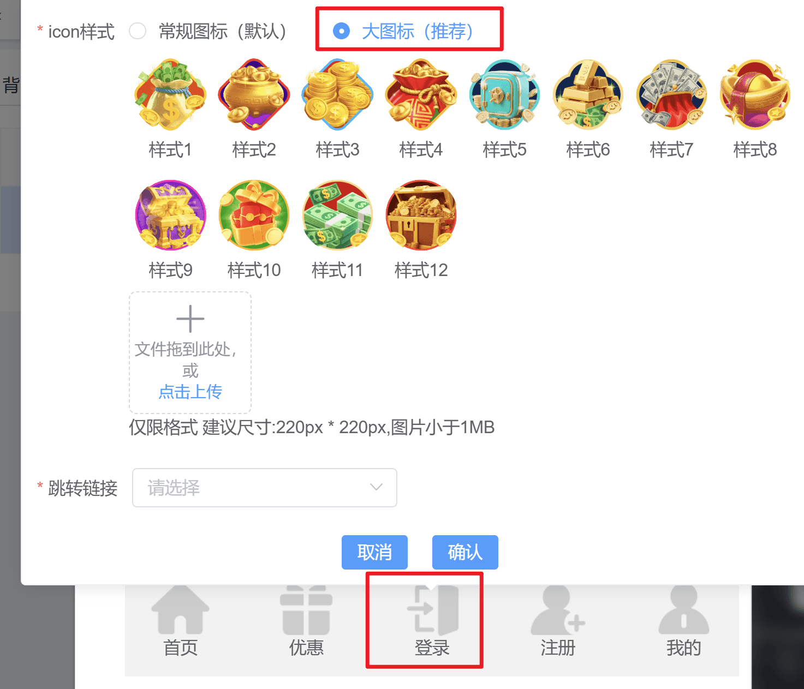
注：改版后的配置，H5、APP皆展示相同配置
不支持配置的皮肤默认隐藏
三、背景和底版（高级）
用于配置首页相关的背景色，按照提示配置即可
四、icon图标（高级）
用于配置首页、游戏类别、个人中心图标，跟随当前皮肤功能变动
五、按钮和字体颜色（高级）
用于配置重要按钮颜色以及字体相关
注：以上内容支持公版皮肤展示，不支持配置的内容默认隐藏
六、icon入口配置
icon入口配置列表默认展示系统的入口，支持新增自定义入口
1、新增
翻译类型：选择为系统翻译，只需选择你输入的入口名称语言及入口名称，系统会自动翻译成站点包含的语言，支持查看翻译。选择自定义，则需自行填写站点所有语言对应的入口名称
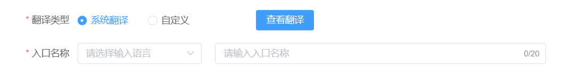
入口展示情形：必填，支持多选，根据选择的内容展示到按钮配置的登录前/登录后
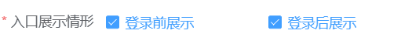
入口配置区域：支持选择底部导航或中部导航，版式不包含中部导航则只能选择底部导航，此处仅设定自定义入口的展示区域，具体展示位置和顺序请前往【按钮配置】页面进行管理
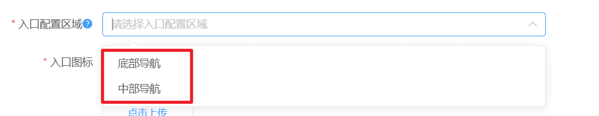
展示到更多：仅入口配置区域选择的是中部导航才需要选择，选择展示后，会在客户端首页中部导航的更多弹窗内展示
点击跳转：支持选择进行中的活动，或者自定义链接
链接地址：点击跳转选择自定义链接才需要填写链接地址
链接传输会员ID：选择传输，则链接会获取到会员ID
跳转方式：支持选择内嵌和外链
2、修改
系统入口只支持修改中部导航【展示到更多】的状态和后台备注
自定义入口所有内容均支持修改，但有以下限制：
（1）正在使用中的入口（即正在客户端展示的入口）不支持修改【入口配置区域】
（2）正在使用的入口类型为自定义的，修改名称和图标后，客户端展示对应的新名称和图标
（3）若入口已正在中部导航功能键1、功能键2、功能键3的任一位置展示（即除【更多】以外的其它位置），则【展示到更多】此配置项不能修改，为不展示
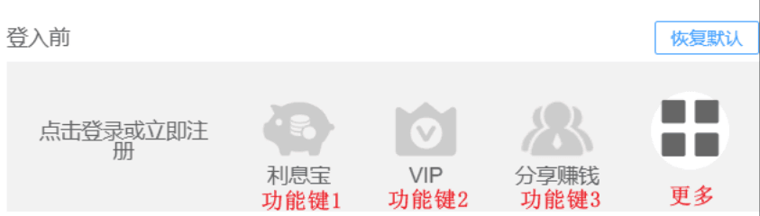
3、删除
自定义入口支持删除，如果自定义入口正在使用，则需要先在【按钮配置】页面取消展示以及icon入口配置【展示到更多】为不展示，才能删除。系统入口不支持删除
七、相关软件推荐配置
1、顶部栏展示当前站点开启的币种，点击对应币种——新建语种即可开始配置
2、配置内容
语言：展示当前站点下所有语言，勾选要配置的语言
入口名称：选择翻译语种输入入口名称
入口图标：可以选择皮肤默认和自定义上传
页面背景风格：可以选择默认样式、系统配置和自定义背景图
页面内容：富文本框，编辑什么就展示什么
3、配置中可查看右边预览效果
4、点击修改进入修改页面，点击修改旁的删除按钮即删除当前语种配置
5、客户端展示位置：对应版式的侧边栏、中部导航、底部导航、我的页面
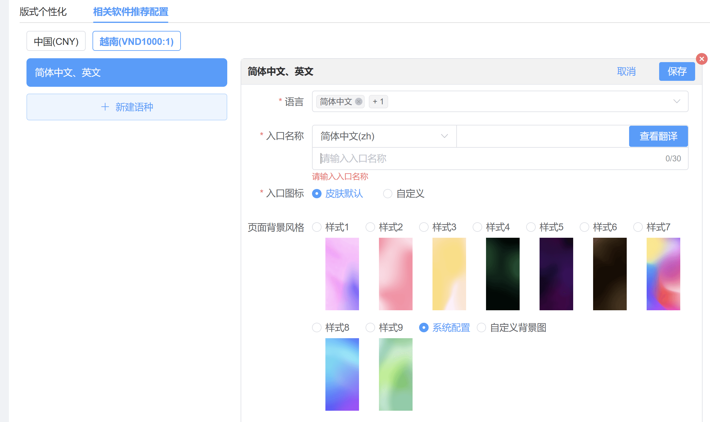